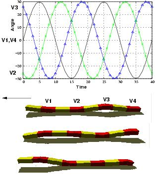

Next: 2 Turning gait Up: 5 Locomotion capabilities Previous: 5 Locomotion capabilities


Next: 2
Turning gait Up: 5
Locomotion capabilities Previous:
5
Locomotion capabilities
For the locomotion in 1D, forward
and backward movements are achieved by means of variations only in
vertical joints (Av/=0), with an offset equal to zero (Ov=0). The
horizontal modules are kept in their home position all the time (
Ah=0, Oh=0). The phase difference between the vertical CPGs is Fv=120
. As studied in previous works[16],
the phase difference is the parameter that determine the coordination
between the joints. The value of 120 is the best. The rhythm pattern
and the simulation state at three instants are shown in Fig. .
.
|
 |
Figure: 1D sinusoidal gait. The angles of the articulations V1, V2, V3, and V4 are changed according to the function depicted